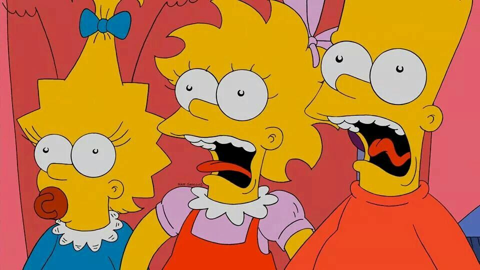
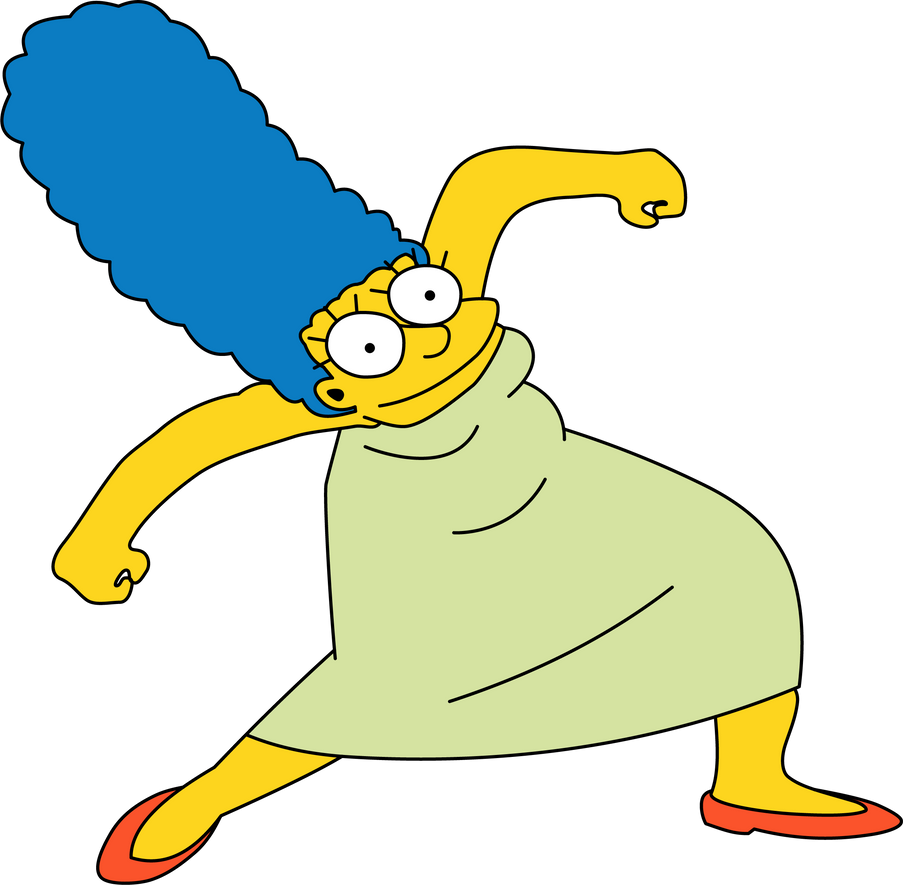
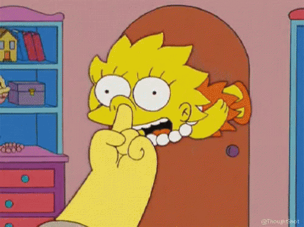

Homer Jay Simpson es un personaje ficticio protagonista de la serie de televisión de dibujos animados Los Simpson. Es el padre de la familia protagonista y uno de los personajes centrales más importantes de la serie.

Marjorie Jacqueline Bouvier más conocida como Marge Simpson es un personaje ficticio de la serie de televisión de dibujos animados Los Simpson. Es la esposa de Homer Simpson y madre de los tres hijos que ha tenido de este matrimonio: Bart, Lisa y Maggie.

Bartholomew ¨Bart¨ Simpson es uno de los personajes ficticios protagonistas de la serie de televisión de dibujos animados Los Simpson. Bart tiene diez años y es el primogénito y único hijo varón de Homer y Marge Simpson. Es el hermano mayor de Lisa y Maggie
